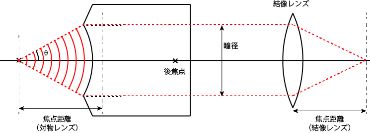

対物レンズの瞳径
さて，正弦条件，を理解したところで，これを応用して対物レンズの瞳径を計算してみましょう．
現在の対物レンズの主流は，無限遠レンズ，です．
ですので，サンプルからの光は平行光となって対物レンズから出ます．
この平行光の直径を，瞳径，と呼びます．
明るい画像を得るためには，この光線を無駄なくカメラに伝える必要があります．

さきの正弦条件と同じ考え方で対物レンズを記したものが上図となります．従って，
\(\Large \begin{align*} 瞳径 &= 2 \times 対物レンズの焦点距離 \times n \cdot sin \theta \\
&= 2 \times 対物レンズの焦点距離 \times NA \end{align*} \)
が成り立ちます（レンズの厚みを無視しています）．
対物レンズの倍率は，無限遠光学系の結像特性，で示したように，
\(\Large 拡大率 = \frac{結像レンズの焦点距離}{対物レンズの焦点距離} \)
となるので，
\(\Large 瞳径 = 2 \times \frac{結像レンズの焦点距離}{拡大率} \times NA \)
となります．
では，結像レンズの焦点距離はどのくらいでしょう？
これは，各社によって変わりますが，
| メーカー | 結像レンズの焦点距離 |
| ニコン | 200 mm |
| オリンパス | 180 mm |
となりますので，
対物レンズの焦点距離
| メーカー | 結像レンズの焦点距離 | 対物レンズ | 対物レンズの焦点距離 |
| ニコン | 200 mm | 100倍 | 2.0 mm |
| 60倍 | 3.3 mm | ||
| オリンパス | 180 mm | 100倍 | 1.8 mm |
| 60倍 | 3.0 mm |
対物レンズの瞳径
| メーカー | 結像レンズの焦点距離 | 対物レンズ | NA | 瞳径 |
| ニコン | 200 mm | 100倍 | 1.40 | 5.6 mm |
| 60倍 | 1.40 | 9.3 mm | ||
| オリンパス | 180 mm | 100倍 | 1.40 | 5.0 mm |
| 60倍 | 1.40 | 8.4 mm |
となります．表のNAはあくまで参考値なので使用する対物レンズのNAを確認ください．